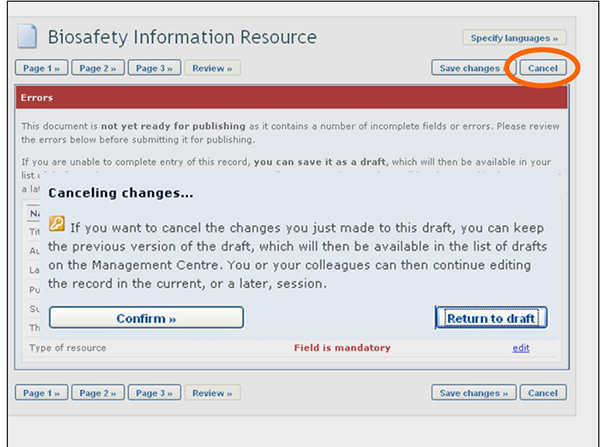

The Review button found at both the top and the bottom of the Common Format, allows BCH users to review their information as it will appear in the record when published.

Clicking the review button opens the review page. If there are errors in the fields, they will be displayed with an error description for each one. Mandatory fields that are not completed are also highlighted.
By clicking on the Edit button, you return to the field that needs to be modified. If you cannot complete the form at that time, it is recommended that you save it as a draft.
It is very important to review the record for completeness and accuracy prior to submission for publication.
The Save Changes button, at both the top and the bottom of the online Common Formats, allows you to a) Submit the record for publishing or b) Save it as a draft. If you choose the latter, a saved draft will then be available in the Edit a draft record section for access at a later time.
The Cancel button, at both the top and the bottom of the online Common Format, allows you to cancel the changes you have made.
